The studio & faceting CAD
indicatrix-cut — a Slint desktop application: design library, live spectral viewport, a constraint-based faceting editor, a rough planner and guided tutorials.
This page is an overview. The user manual explains every window step by step; begin with Chapter 1, Getting Started. Inside the program it opens from Help → User Manual, and F1 opens the page for whatever is on screen.
The faceting CAD is in beta. Solving runs on a background solve service with real mid-solve cancellation and a progress-tracked activity list rather than freezing the editor, new designs are guided by a template gallery and by in-app tutorials, and results carry stale badges the moment they no longer match the current design. The features added in October 2026 are the newest part: concave tiers, parametric relations, history and variants, cutting mode, the tutorials and the command palette. They passed code review and automated tests, and they have had less hands-on use than the older parts. The editor's interaction model is still evolving, so check a design against an established CAD before you cut from it. That advice describes the state of the CAD today: Indicatrix is meant to grow into a complete faceting suite. The design library and 3D viewport (sections 1–4 below) are more stable than the editor itself and the rough planner (sections 5–11).
1Overview
apps/indicatrix-cut is built with
Slint. It combines a design-library
browser, a live 3D spectral viewport, and the faceting CAD engine in
one window.

The sections follow the window. Sections 2 to 4 cover the library, the viewport and the tilt sweeps. Sections 5 to 10 cover the faceting CAD. Section 11 is the rough planner, sections 12 and 13 are the solid view and export, section 14 is the render queue, sections 15 and 16 cover the tutorials and the interface, and section 17 covers installing the program and the command-line tool.
- Library and viewport (sections 2–4): a searchable design library, a live spectral path tracer with fifteen lighting presets, a quick colour for the stone, per-design lighting, and tilt performance curves and videos.
- Faceting CAD, beta (sections 5–10): a constraint solver and tier editor with nine templates and an overall verdict badge; parametric relations between tier angles; concave tiers cut with cylinder, cone, circle, disc or sphere tools; an angle optimizer, Retarget, angle sweeps and a compare window with plain-words deltas; an undo history with thumbnails and saved variants; and a step-by-step cutting mode.
- Rough planner, beta (section 11): ranks layouts of stones from a modelled block, cylinder or pebble, or from an OBJ, STL or PLY mesh of a non-convex rough, keeping clear of its inclusions.
- Solid view and export (sections 12–13): the Cut slider, drag handles, Slice, the faceting diagram, the printable cutting sheet, finished-stone exports and the file formats.
- Render jobs (section 14): a queue of still exports and tilt videos that renders one job at a time while you work, with a script export for rendering on another computer.
- Learning and interface (sections 15–16): 68 short tutorials, a “Build this design” lesson for any library design, a Simple and Advanced switch, preferences, a built-in manual and a command palette.
- Install and command line (section 17): installing with
Cargo, building from source, the log file, and the windowless
indicatrix-cli.
The native design file keeps all of this. A design with parametric relations is saved as design file version 3, a design with concave tiers as version 2, and a design with neither keeps the version it always had (section 13).
This page describes the desktop application. Most of the features added in
October 2026 exist only there; the web app page says
what the browser version has. The same engines also run without a window in
the command-line tool indicatrix-cli
(apps/indicatrix-cli), with the commands info, solve, metrics,
validate, optimize, retarget, sweep, export, render and tilt-video; see
section 17. Some controls named
below are hidden in the Simple interface; section 16 says which.
2The design library
Designs are stored in a local SQLite database
(indicatrix-vault) by default — no account, no telemetry —
though the library view can also switch to browsing the remote
coordinator's catalogue over the network instead. Filterable by shape, index-gear
tooth count, refractive-index range, length/width ratio, and facet
count. The shape filter is populated partly by automatic
classification: girdle facet count and length/width ratio identify a
confident round, triangle, square, hexagon, or octagon outline;
elongated shapes such as oval, cushion, and emerald are not
auto-detected and keep whatever label the source data or a manual edit
gives them. Import brings in single .asc, .gem
or .gcs files or entire folders (subfolders only when
Include subfolders is ticked before you choose the folder); the
original file is preserved alongside the parsed schedule. The import runs
in the background with a progress bar, a file that cannot be read is skipped
with the reader's own explanation while the rest of the folder still
imports, and a summary lists what was imported, skipped, replaced or
converted with notes. A .gem or .gcs is stored
with a generated .asc and the original attached (see
section 13 for the formats).
The Library menu holds the whole-library actions. Regenerate All Preview Images..., Regenerate All Tilt Curves... and Regenerate Both... rebuild the cached preview thumbnails and tilt curves for every design in the library; each one opens a confirmation step first and is greyed out only while such a batch is already running. (The filter panel has a matching pair of buttons that regenerate just the filtered set.) Plan Rough... opens the Rough planner (section 11), which draws its candidate designs from this library.
Per-design actions are on the right-click menu of a card, on its three-dot button and in Library → Selected Design. They include generating previews and tilt curves, ignoring a design, excluding it from the Rough planner, and Build this design, which turns the design into a step-by-step tutorial (section 15).
Some things you make around a design are kept in the library, not in the
design file: the variants you save (section
9), the cutting steps you mark done (section
10) and the lighting you save for the design
(section 3). The library finds them by the design's
id, which the .indicatrix file keeps in its metadata. Copying
the file to another computer copies the design and not this data.
3The 3D viewport
The viewport switches between a fast solid preview and the full spectral path tracer. Orbit, pan, and zoom with the mouse; the progressive path tracer accumulates samples while the camera is still and resets on any camera or material change. Fifteen lighting presets — an analytic studio rig in five moods (daylight, incandescent, a 2856 K Incandescent A, ring lights and a dark spotlight), eight lit models (a Grading tray hemisphere, the default jewellery light tent and its even white-tray, jewellery-shop and window-daylight variants (with a built-in Window daylight view that puts the light at 30°), a daylight sky without a sun, a daylight sky with a real 0.27° sun, and a green/red/blue contrast view in the style of an ASET scope, scored as the Grading tray; see the physics page) and two UV lamps at 365 nm and 395 nm, traced on the CPU only — plus an optional grey or white backdrop card behind the stone, a surface-glare slider that fades the white mirror image of the light on the table (the cross-polarised look; built-in presets only, never the readouts), and custom HDR equirectangular environment maps, are all supported, along with live readouts of brilliance, fire, scintillation, windowing, and extinction as the stone is orbited. The head-shadow slider (0–30°, default 16°, 0 is off), which darkens the facets that would reflect the observer's own head, changes those readouts as well as the picture under the lit models; the studio rigs, the UV lamps and an HDR map ignore it. The Grading tray is the light the optimizer and Retarget score under. If the optional GPU compute path loses its device mid-session, the viewport re-acquires it once and retries the same frame; if that also fails it falls back to the CPU tracer for the rest of the session with a visible status message, rather than freezing.
Studio exposure is a Settings slider from 0.4× to 2.5× (default 1×) that scales the light of every built-in lighting; a loaded HDR map ignores it. The light direction is an azimuth (0–360°, default 48°) and an elevation (10–90°, default 72°), set by two sliders in Settings or by right-dragging (or Shift + left-dragging) in the viewport; it moves the light tent's softbox, the sun and the studio key light, and the Grading tray does not depend on it. A view is a lighting preset plus a light direction, an exposure and a camera distance (the Grading tray also a camera pose). Seven come with the app, and the Lighting Presets list in Settings also holds the ones you save yourself, each markable as usable in the export dialog:
| View | Lighting preset | Azimuth / elevation | Exposure |
|---|---|---|---|
| Studio Softbox | Gem Studio Ring Lights | 48° / 54° | 1× |
| Daylight Bright | D65 Daylight (6500K) | 30° / 65° | 1.3× |
| Dramatic Spotlight | Dramatic Dark Spotlight | 300° / 25° | 0.7× |
| Light Tent | Light tent + black cards | 48° / 72° | 1× |
| Grading tray | Grading tray (D65 hemisphere + head shadow), seen from almost straight above | 48° / 72° | 1× |
| Daylight Sun | Daylight sky + direct sun | 30° / 55° | 1× |
| Window daylight | Window daylight | 40° / 30° | 1.2× |

The Color button in the Live Render toolbar shows the stone in another colour without making a custom material. Its list holds Material default, nine ready-made colours (Clear, Blue, Red, Green, Violet, Yellow, Pink, Teal and Amber) and Custom color..., which opens a colour editor with three sliders, Tone, Saturation and Hue (the L*, C* and h of the L*C*h colour space), and a hue, saturation and brightness picker as an alternative. When the view shows the design that is open in the editor, the pick becomes that design's own colour, in one undo step. For anything else, such as a design you only browse, the pick changes this view only and the app remembers it. Whatever colour the view shows is also the colour of the metrics, the tilt curves, high-resolution exports, the tilt video and renders done by remote workers. A material that defines its own colour disables the button.
The same colour editor opens from two more places: Custom... in the Body Color box of Design settings (the design's own colour, applied in one undo step) and Pick... in the Material Editor, where Save keeps the colour in a custom material. The colour of a gem depends on the length of the light path, so the editor shows what you chose as four swatches, at 3 mm, 5 mm, 10 mm and This stone (the design's own size, 5 mm while no girdle diameter is set), and the design keeps it as an absorption spectrum per millimetre: a larger stone renders deeper and a smaller one lighter. A badge says Reachable with the colour difference (Delta E) from your request, or in amber that the colour is not fully reachable at this size and how far the closest reachable colour is; very rich colours are not all reachable. A custom material keeps its seven-band colour, and the web app has the same editor.
A design can also remember its lighting. Use this lighting for this design in Settings saves the lighting rig, the light's position and height, the exposure, the surface glare, the backdrop and a loaded HDR environment map. It does not save the camera. The lighting is kept in the library under the design's id and never in the design file. It is applied when the design is opened in the editor, and not when you click a row in the catalogue, so you can compare many designs under one lighting.
A custom material can be entered as a Sellmeier fit (one or three terms) or a Cauchy fit instead of two sliders. The editor shows the index at the sodium, blue and red lines and the Abbe number. It refuses a curve with a resonance inside 300–800 nm, an index that does not stay above 1 or an index it cannot calculate, and it warns about curves that are possible but suspicious. The stone is then traced with the full curve on the GPU, on the CPU and on remote workers (see the materials page).
The Live Render picture follows the Edit tab's Cut slider (section 12) and shows a badge with a Show finished button while the stone is cut back. A stone with concave tiers (section 7) is always traced on the CPU, because the GPU kernels do not know about tools. A remote worker receives the tools with the scene and traces the same stone.
4Tilt performance sweeps


A cut that looks brilliant face-up can black out or window heavily at a
few degrees of tilt. Indicatrix sweeps a 181-point tilt profile
(±90°) at each of 4 fixed camera azimuths — 0°, 45°, 90°,
135° (PROFILE_AZIMUTHS_DEG, crates/indicatrix/src/color/metrics/profile.rs)
— and plots brilliance, windowing, and extinction together so a design's
behaviour in the hand, not just face-up, is visible.
A tilt sweep can also be exported as a video: pick one of the four
camera azimuths as the sweep axis, a step from 0.01° up to 5° between
frames (MIN_STEP_DEG/MAX_STEP_DEG,
apps/indicatrix-cut/src/gui/tilt/video_export/params.rs),
and a resolution from 128 × 128 up to 8K (7680 × 4320), or a custom
size clamped to the same 128–8192 px range per axis. An optional
performance overlay burns the brilliance/windowing/extinction readout
into each frame in a layout that adapts to the chosen width. Every
frame renders through the same local CPU/GPU/hybrid setting and
configured remote coordinator as a still-image export — not a separate,
CPU-only tracer — including the same Transfer choice while a
remote is configured: Full data merges the remote's samples
with the local lanes, Final picture only has the coordinator
send one finished PNG per frame while the local lanes stay idle. The
live viewport pauses for the whole video's
duration exactly as it does during a still-image export, and never
shares the app's single GPU adapter with it while it runs. The
numbered PNG sequence is then muxed into an H.264 MP4 with
ffmpeg when it is found on PATH, an animated
GIF via the image crate when it is not, or, failing both,
left as a PNG sequence with a README.txt explaining how
to mux it by hand.
5Constraint solver and tier editor beta


Cutting instructions are a geometric constraint graph, not a static list of
numbers. A meet-point instruction ("cut tier P2 until it meets P1 and G1
at a single point") specifies a facet's depth implicitly; the solver in
crates/indicatrix/src/geometry/meet_solver resolves that
depth by intersecting the facet plane with its neighbours' already-known
vertices, walking the schedule in dependency order so that changing one
tier's angle recomputes every tier that depends on it. Where a design
has no .asc file to anchor against, the solver can instead
anchor a block against the design's own printed C/W/P/W
proportions (meet_solver/anchors.rs).
Solving runs on a background solve service (one persistent worker thread with last-wins request coalescing and real mid-solve cancellation) once a design is large enough that solving stops being instantaneous; the Solve/Deep Solve/Optimize buttons relabel to a running state with an Abandon/Cancel action, and a status-strip activity list shows every long-running operation — background solve, Deep Solve, Optimize, Retarget, a tilt curve or video export — with elapsed time and, where the operation can measure one, a progress fraction. Editing the design while a solve is in flight discards the stale result rather than applying it over a newer edit, and every analysis result the editor keeps on screen (Retarget's proposal, a tier's manufacturability warnings, the tilt curve cache) carries a stale badge the instant an edit invalidates it, cleared only by re-running that analysis.
A pavilion tier's row shows a colour-coded critical-angle margin bar
next to its angle field, live as you type, and the first time (per
session) a design has no anchor tier, a one-time explainer card walks
through why the solver needs one before you hit the "no anchor"
status message cold. New designs start from an empty-state card
offering the New Design dialog's template gallery or an in-app guided
worked example. New Design always opens a design: even
the Empty template leaves a zero-tier design with its preform in the
viewport, a "no tiers yet" hint and an + Add Tier
button. The worked example (Help → Guide: New Design Walkthrough) walks
you through building a simple round-brilliant-style stone yourself,
tier by tier — it does not build the stone for you. Each step lists its
actions as numbered lines with the exact values to type, outlines the
control it is about, and moves on by itself once its goal is reached —
the tier exists with the right name, angle and indices, the material is
applied, the design solves to a closed stone — whichever route got
there (the tier form, a quick-add button, an inline edit, Undo/Redo, or
auto-solve); a status chip reads "Waiting for: …" until then.
Skip step moves on without the goal, Back returns to
the previous step, and the two reading steps wait for Next.
Controls the current step does not use are locked — dimmed, with a
tooltip saying so, keyboard shortcuts included — until the guide is
closed. The guide panel sits beside the tier table on a wide Edit
layout and floats at the window's right edge everywhere else, where it
can be dragged out of the way; either way it collapses to a small
"Guide · Step N of M" pill
(apps/indicatrix-cut/docs/manual/07-new-design-worked-example.md).
A full keyboard-shortcut overlay is one press of ? away
(or Help → Keyboard Shortcuts) whenever no text field has focus.
The tier form
The inspector's Tier tab edits one tier at a time. Number fields take a
plain number or a small calculation: 41.5+0.3 and
(90-41)/2 are worked out by the app. The same holds for the
exact scale value, the cheater offset, the preform fields, the girdle
diameter, the specific gravity override, the gear reference angle, the
symmetry order and the Offset box for a group of tiers. Text in the Angle
field that starts with = is not worked out once but kept as a
relation (section 6).
The Indices field takes values from 0 up to
and including the gear's tooth count, because the index wheel is a ring. On
a 96-tooth gear, 96 is allowed and names the same position as
0; the app keeps the number as you typed it. A value outside
the range is refused with a message that names the range, and so is the same
position listed twice. Two shorthands save typing: 0:12:96
counts from 0 in steps of 12 and stops before 96, and 12 x8
spreads eight evenly spaced copies around the wheel. A refusal appears
directly under the field it is about, and that field gets a red border.
A pavilion or crown tier also has an angle slider and a Typical menu. The slider runs from 30° to 55° for a pavilion and from 15° to 55° for a crown, snaps to 0.05° (0.01° while Shift is held), and on a pavilion marks a green band from 1° to 6° above the stone's critical angle. The menu lists common angles with a one-line reason each: for a pavilion the standard angle for the material, the critical angle plus 2° and plus 4°; for a crown the standard angle and 25°, 32° and 40° for a low, medium and high crown. Neither control saves anything: Save Tier commits the tier as one undoable edit. The preform proportions have sliders with the same rule, and Apply Preform applies them.
Below the form, a row of chips detaches or removes single facets of a tier, a position box adds one, and Mirror and Rotate (Advanced) reflect or turn all of the tier's indices around the wheel. A tier's angle can also be edited in place in the tier table (double-click or F2) and nudged with the arrow keys. The arrows follow what the table shows: a pavilion angle is printed without its minus sign, so Up makes the shown number bigger. A burst of nudges is one undo step. Ctrl+D duplicates a tier, Alt+Up and Alt+Down reorder it, and Ctrl+click or Shift+click select several tiers for one batched nudge.
Templates
The New Design dialog is a gallery of nine templates and a blank design. The
five everyday shapes are a round brilliant, an oval, a cushion, an emerald
step cut and a princess cut. The other four are a shallow and a deep round
brilliant and two teaching designs. You pick the material, the index gear
and the stone's width in millimetres, and the stone is built on its own
rough and solved, so a closed stone is on screen at once. Each template is
checked to close on every gear the dialog offers for it
(crates/indicatrix-cut-core/src/templates.rs). If the
material's refractive index differs from the one the template was designed
for by more than 0.02, the pavilion angles are first adapted with the
Retarget Shift method below. The adapted stone is kept only if it passes
Retarget's validity check; otherwise the template's own angles stay and a
warning says why.
The overall verdict
A badge in the status strip sums the design up in one word: Good, Check or Problem. Click it for the reasons, worst first. Each reason has a Show button that selects the tier it is about and, where a safe tool exists, a Fix button. The fixes are: snap an index to the nearest gear tooth; remove facets that a later tier cuts away; move a tier to just after the last tier it meets; steepen a pavilion facet to the critical angle plus 2°, turned about its girdle-side edge; and add a flat table. A fix is planned on a copy of the design, refused with a plain sentence when it cannot be made safely, and is one undo step. The badge is recomputed after each solve and stays dimmed after an edit until the next one.
Besides the structural checks, the verdict uses three quick table-up figures
in the design's material: windowing above 15 % is a Check and above 30 % a
Problem, extinction above 40 % and 60 %, brilliance below 25 % and 10 %. The
windowing limits are the ones to trust most. The other two are loose
starting points, kept as named constants in
crates/indicatrix-editor/src/verdict.rs.
Editing the instructions as text
Edit → Edit as Text... shows the open design's cutting
instructions as .asc text with freshly solved masts, and lets
you change them. A live check names the line of any problem, and before you
apply, the dialog lists what Apply would change and what it would
lose. Apply is one undo step. The text carries no tier ids, so tiers are
matched by name, then by angle and indices; a tier that stays keeps its
note, cheater offset, depth target and relation. The text leaves out what an
.asc cannot hold: notes, cheater offsets, targets, relations,
concave tiers, the preform, the material and the girdle size. Apply never
changes the preform, the material or the concave tiers. The dialog can lay
the text against the saved file or the snapshot, line by line, with added
and removed lines marked. While a design has concave tiers, the gear cannot
be changed in the text, because the tool placements follow the gear.
Retarget for another material
Retarget... (see the figures below) proposes new crown and pavilion angles for another material and shows every change before anything is applied. The target is a built-in material, a custom one or a typed refractive index. Shift keeps each pavilion tier's margin over the critical angle; it is instant and always gives the same answer. Optimize starts from the Shift result and, when you press Search, looks for a better stone in the target material. It may move every crown and pavilion angle by up to 3°, 6°, 10° or 15° from its Shift angle, tries 100, 300 or 800 trial stones (Quick, Normal or Thorough), and offers up to three valid options, scored under the Grading tray whatever lighting the viewport shows. The Crown Handling control (Advanced) says how the crown follows the pavilion. By default Crown follows the pavilion: a steeper or shallower pavilion makes the stone deeper or shallower, and every crown angle is scaled by the same vertical stretch, so the stone keeps its silhouette (crown height against pavilion depth) and its table size. Switch that off to use a Fraction of shift slider instead (0 % leaves the crown alone), or tick Scale crown by ratio instead to scale every crown angle by the ratio of the two critical angles, which wins over the other two.
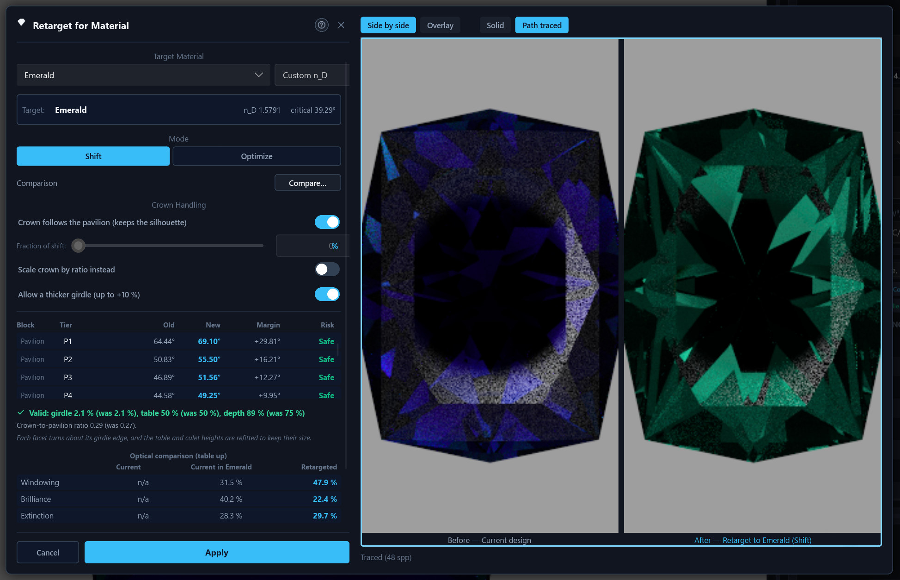
Keep the design's look (Advanced, on by default) scores every option, and the Shift start it is compared with, with a penalty for drifting from the design's table size and its crown-to-pavilion ratio, so the search prefers options that look like your stone; the verdict quotes the depth and the ratio next to the old ones. Switched off, options are ranked by the optical score and the yield alone. The search never lets a pavilion angle fall below the target's critical angle plus the margin the design has now (at most 2°), so brilliance cannot be bought with a window.
The table, the culet and the girdle never move. The table and culet are listed greyed as Not changed, and the girdle is not listed. A moved angle keeps its sign and stays between 1° and 89.5°. Each facet turns about the edge it shares with the girdle, so the girdle keeps its outline and thickness, and the table and culet heights are refitted so they keep their size. A tier whose angle follows a relation is not changed on its own; it follows the tiers it reads.
One exception keeps a change valid: Allow a thicker girdle (up to +10 %), on by default in Advanced mode. When the new angles would pinch the girdle at its corners, Retarget thickens the girdle band by 5 % and then by 10 % (never thinner) before giving up. Only the thickness changes: the plan view, the table and culet size and the crown-to-pavilion ratio are kept, the total depth grows by the girdle change, and the result text says which step was used.
Every result is checked against the original stone before Apply is allowed. The dialog says Valid, with the girdle, thinnest-point and table figures, or Not valid with the reasons: the facets no longer close; the girdle disappears or becomes less than half as thick, overall or at its thinnest point (the corners of a faceted girdle); the table falls below the top of the girdle or the culet rises above its bottom; a tier loses facets; facets become too small to cut; or a relation can no longer hold. When the plain Shift is not valid, the dialog says so and points to Optimize. Compare... keeps working on a change that is not valid, so you can see what goes wrong. If the original design itself does not solve, nothing can be compared, the dialog says so, and Apply keeps the plain angle change. Apply is one undo step that covers the angles, the heights and the material.
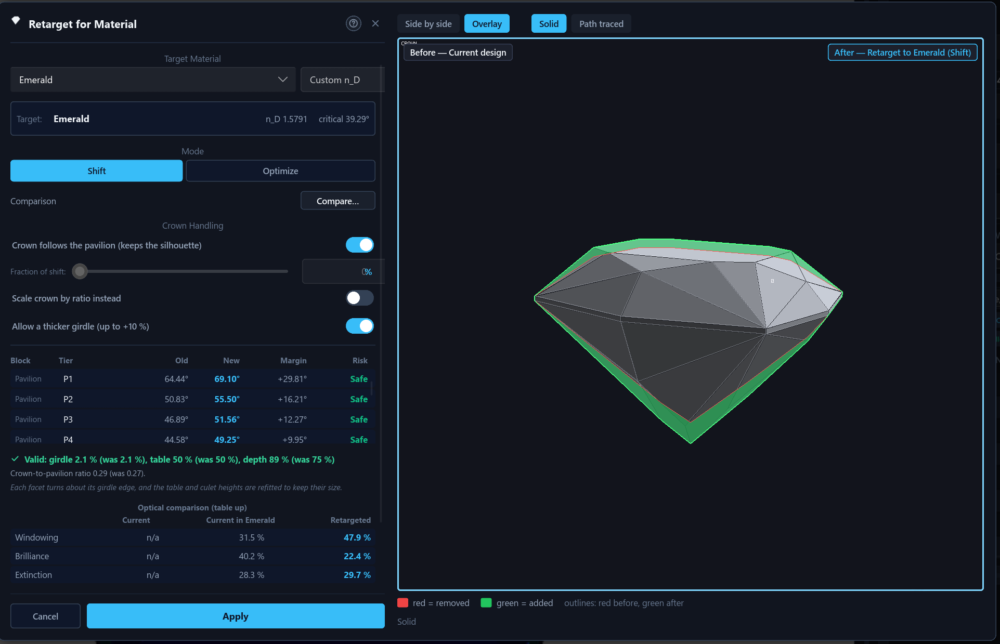
The Risk column depends on the block. A pavilion row shows its margin over the target material's critical angle: Safe at 2° or more, Marginal from 0° to 2°, Windows below 0°. A crown row shows an estimate, marked est., of the same margin for light entering through that crown facet, read against the retargeted main pavilion angle. It follows a single ray, so read it as a guide. The table and culet rows have no margin. A small table also compares three stones on windowing, brilliance and extinction: the current design in its own material, the same design in the target material, and the retargeted design.
Changing the index gear
The Index Gear list in the Design settings panel changes the wheel a design is cut on, for example from 96 to 64 teeth. Pick the gear and press Apply Gear; the button carries an asterisk while a change is waiting. Nothing changes yet: a Confirm Index Remap dialog lists every tier with its old and new indices. Each position is carried over in proportion to the new tooth count. A position that does not land on a whole tooth of the new gear is rounded, and its row is shown in red, so look at those rows before you confirm. In Advanced mode a Rounding list chooses how: Nearest (the usual), Floor or Ceil, so a position you placed on a half tooth does not move the other way. Confirm Remap applies the change and Cancel keeps the old gear. The angles and the meet constraints are not touched, and concave tiers move with the gear.
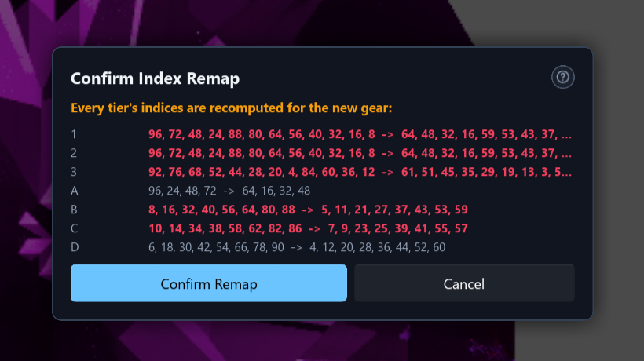
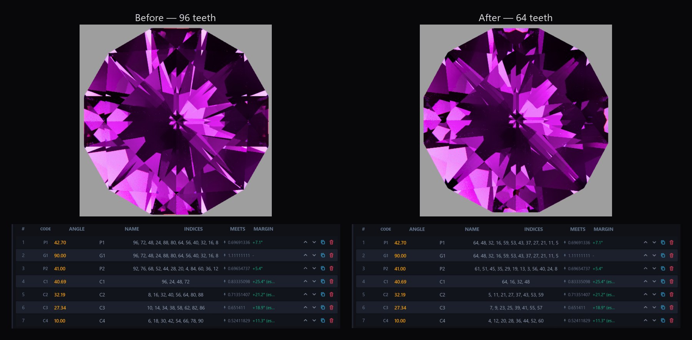
6Parametric relations beta
A relation makes one tier's angle follow other tiers'
angles instead of being a number of its own. If P2 follows P1 with the
relation P1 - 2, P2 is always two degrees shallower than P1:
change P1 and P2 moves with it, in the same undo step. Relations suit things
that should stay in step, such as a ladder of step cuts, a main that sits a
fixed number of degrees from its break, or a facet halfway between two
others.
To make one, start the Angle field of the Tier tab with =,
write what the angle should follow, and press Enter or Save Tier.
| You type | The angle becomes |
|---|---|
=C1-4 | 4° less than tier C1 |
=(P1+P3)/2 | halfway between P1 and P3 |
=P1*0.5 | half of P1 |
=[Crown Main]-2 | 2° less than the tier called “Crown Main” |
A tier's name stands for its angle from the girdle plane, always as a
positive number, so a pavilion tier at −41° counts as 41. The tier you
are editing keeps its own side. Names are matched exactly first, then
ignoring capitals, and a name with a space goes in square brackets. You can
use numbers, + - * / and round brackets. Text that does not
start with = is never a relation: 41.5+0.3 is
worked out once and the tier gets the number 41.8.
A tier with a relation is marked in three places. The Angle field shows the relation, a note under it reads “Follows a relation” with the angle it works out to and a Remove relation button, and the tier table shows a link icon in the angle cell. Removing the relation keeps the angle the tier has at that moment. Setting, changing and removing a relation are each one undo step, and the Undo button says which (“Undo: Set P2 = P1 - 2”).
The app refuses a relation, and changes nothing, in these cases:
- a loop (P1 follows P2 while P2 follows P1), or a tier that follows itself;
- a name that no tier has, or that two tiers share;
- a result that is not a facet angle: it must be more than 0° and at most 90°, which also stops a later nudge that would push a follower out of that range;
- a tier that cannot follow anything: a table or culet (0°) and a girdle (90°);
- a plain angle typed on a tier that follows a relation.
A follower has no angle of its own to edit. Double-click, F2, the
Ctrl+scroll step and the group Offset box leave it alone and show a hint,
and in the Solid view its angle handle is hidden. Nudging or dragging the
tier it follows moves the whole chain in one undo step. Removing a tier that
others follow is allowed: the followers keep their angle and stop following,
and one Undo brings back the tier and the relation together. The
Steps / Mirror panel can generate a ladder of step cuts
with Keep linked ticked, so that each tier after the first
follows the first (Step1 + 2, Step1 + 4 and so
on).
The other engines respect relations. The optimizer never moves a follower on its own: every candidate is scored with the relations worked out, and applying one moves the followers too. Retarget does the same and refuses a change that would break a relation. An angle sweep cannot sweep a follower, but the followers of the swept tier move at every angle. A variant brings its own relations with its angles, and Edit as Text keeps the relation of a tier that stays.
Relations are saved with the design, written against the tiers' stable ids,
so renaming a tier never breaks one. The design file version becomes 3 only
when a design has at least one relation. A design without relations keeps
the version it had (1, or 2 with concave tiers), and its file is what an
older build would have written. An older build refuses a version 3 file
instead of opening it and dropping the relations on the next save. An
.asc file has no way to say “follows”, so exporting
one writes each tier's current angle as a plain number.
7Concave tiers beta
Most facets are flat: a lap grinds one plane and the stone stays convex. A
concave tier is cut with a shaped tool instead and leaves a
groove, a bowl or a dimple. The tool is a cylinder (CYL), a
cone (CON), a circle (CIR), a disc
(DSC) or a sphere (SPH). The engine resolves each
tool placement to a convex volume that is subtracted from the flat stone
(crates/indicatrix/src/geometry/tool.rs), up to 128 placements
in one stone. A design with no concave tiers behaves, prints and saves
exactly as before.
A concave tier follows the standard notation for fantasy and concave cuts
and is written on two lines. Line 1 is the facet: the tier's name, its angle
φ off the girdle plane, the index-wheel positions and your free-text
instructions. Line 2 is the tool: its code, its azimuth θ, its
displacement X, Y and Z as ratios of
the stone width, D/W (the tool's diameter over the stone
width), for a cone or disc the included angle, and then
reciprocating or plunge. The two lines share one
shaded band on the cutting sheet, in the Schedule tab and in the catalogue's
cutting table.
+ Add Concave Tier in the tier table opens the concave form
in the Tier tab, with fields for name, angle, indices, instructions, tool,
θ, X, Y, Z, D/W, tool angle and reciprocating. A field that cannot be
used is outlined in red and named in the message under the form. Concave
rows come after the flat ones in the tier table. Their MEETS column shows a
Tool badge, their mast and margin read - and their SOLVE column
reads Tool cut, because a concave tier has no mast of its own.
Their angle is edited in the inspector. Move, Duplicate and Delete work, and
a concave tier moves only among the concave rows, because their order is
their cutting order within a section.
The order matters. Concave tiers are cut after the flat faceting of their section: at the end of the pavilion and girdle section, and at the end of the crown, directly above the table. The Cut slider (section 12) and cutting mode (section 10) follow this order, so every step looks like a real stage of the work. Hover and click name the facet that is drawn under the pointer, also in a design with concave tiers.
A sixth manufacturability check runs only on designs with concave tiers; the
five flat checks are unchanged. It reports
(crates/indicatrix-cut-core/src/manufacturability/warning.rs):
- a tool that lies outside the stone and cuts nothing;
- a tool that cuts clean through the stone;
- a tool that cuts away a meet point, or a vertex that sets the stone's width, length or height;
- a tool that sits entirely inside the stone and never reaches its surface;
- two tools that remove overlapping volume;
- a facet that the concave cuts leave as a sliver.
The solid view, the diagram and the render show the stone with every tool's cut removed, and the tool facets have their own ids, so hover names them. The path tracer runs such a stone on the CPU, whatever the local compute setting, because the GPU kernels do not know about tools; a render of a concave design is slower than the same design without its tools. A remote worker receives the tools with the scene and traces the same stone, so local, remote and combined renders agree. Brilliance, windowing, extinction, scintillation and fire, the tilt curves and the tilt hover preview are computed on the stone with its tools. A design whose tiers do not resolve to tools (a tier that fails validation, or more placements than the limit) is drawn as its flat stone alone, and the tier table's warning badge says why.
The native .indicatrix file keeps concave tiers exactly (design
file version 2). An .asc file keeps two footnotes per tier in
cutting order and never writes a concave tier as an .asc tier.
A .gcs export keeps the same footnotes in its footer fields.
Export Edited .asc and Export as Gem Cut Studio tell you before writing that
concave tiers cannot be written to the format, and ask for confirmation.
Other tools treat concave tiers as follows. The Rough planner takes the volume, the carat weight and the yield from the carved stone, draws the cuts and places the stone on its carved outline (section 11). The optimizer and the angle sweep score the flat stone, so their figures leave out the tools. The Compare window draws, traces and measures the stone with its tools (a concave side may trace at a lower sample count when it is slow); the History pictures draw the flat stone. Cutting mode shows a Tool line on a concave step. Two tutorials teach concave tiers: one for the cylinder and cone, one for the sphere, disc and plunge.
Clicking a groove or dimple in the solid view or the diagram selects its concave tier, and selecting a concave row tints all of its tool facets. Limits today: each tool placement is taken from the flat stone's measured width, so concave edits never change the stone's width, length or height; library previews of a design that has only an angle table leave its concave rows out; and the GPU does not trace tools.
8Preforms, the optimizer and angle sweeps beta
indicatrix-cut-core's preform module models the
rough gem material as a rectangular block or a round/oval cylinder. Its
yield_metrics module reports volumetric yield, an estimated
carat weight from the material's specific gravity, and flags a design whose
facets cut outside the stated rough. In the inspector's Preform tab, the
half-width (1 to 3), the length/width (1 to 2.5), the depth (1 to 3.5) and
the girdle Y-offset (plus and minus half the depth, in millimetres, once a
girdle diameter is set) each have a slider. A slider only fills its field;
nothing changes in the design until you click Apply Preform.
Manufacturability checks (manufacturability/) run on each
solve. They report vanishing facets that fail to form a real face and facets
too small to cut reliably; these two need a closed solid. They also report
an index that does not land on a gear tooth, a meet that names a tier cut
later, and a meet name that would not survive an .asc round
trip. The warnings go stale at the next edit and come back at the next
solve. Designs with concave tiers get a sixth check
(section 7).
A tier's constraint can also be authored as a real-world target rather
than a dimensionless mast: cut to a stated depth in millimetres, or
bisect the tier's mast until the design's measured girdle thickness or
table width lands on a stated millimetre figure
(TierTarget::DepthMm/GirdleThicknessMm/
TableWidthMm, indicatrix-cut-core/src/design/targets.rs).
Every tier also keeps a stable id (tier_id) that survives
reordering, duplication, and a save/reopen round trip through
the native .indicatrix design file, so a manufacturability
warning or an authored target keeps pointing at the same tier across
edits rather than a table row position.
The optimizer
The Optimize tab runs a coordinate search over the angles of the tiers it may move, followed by a deterministic simplex pass (Polish) that can follow a ridge where two angles must move together. It looks for a few different good designs, ranks them and shows each next to the design you started with. Nothing changes until you click Apply.
A coordinate search walks downhill and can settle in a good but not the best arrangement, so the desktop optimizer tries several starting points. It first screens a spread of trial arrangements, keeps the best ones that differ clearly from each other and runs the search from each, sharing the budget between them. Your own design is always the first start, so the result is never worse than a single search from it. The starts run side by side on the processor cores, and the answer does not depend on how many cores there are. The status line shows the start in progress and the best score so far, and the result names the start that won. With Starts at 1 the search is the plain single descent; the web app always runs one start. By default the search scores under the Grading tray, the evenly lit hemisphere with a head shadow, so brilliance counts every lit direction; under a Studio rig, brilliance is measured against that rig's own lamps and a small note says so.
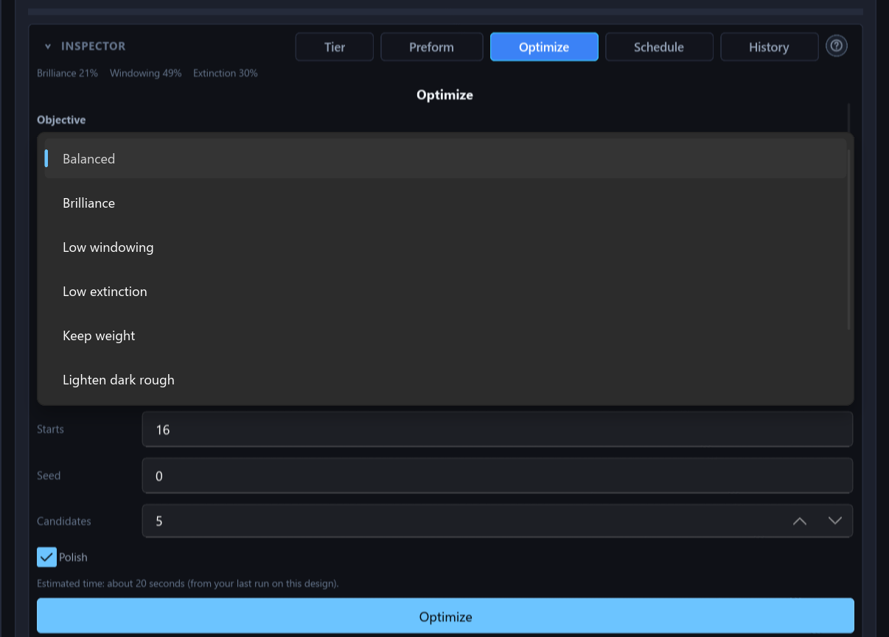
- Objective. Seven presets set the weights of windowing, extinction, tilt brilliance, yield and tone: Balanced (1, 1, 1), Brilliance (tilt brilliance 4), Low windowing (windowing 4), Low extinction (extinction 4), Keep weight (yield 3), and the two tone goals below. Custom shows the weight fields, the Yield weight slider (0 to 3) and the Tone slider (−3 to 3).
- Tone goals. Lighten dark rough looks for the angles that return the lightest face-up colour (higher L*), for rough so dark that the stone looks black. Intensify pale rough looks for the strongest colour (higher C*), for pale material such as aquamarine. The face-up tone is the colour of the light that comes back out of the table, worked out from the body colour in Design settings and the light path through it, under the lighting the Live Render shows when you press Optimize; the UV presets use daylight. Set the girdle diameter so the colour is sized as in the Live Render. The candidate list gains a Tone column (a dot in the predicted colour and L*), the picked candidate shows before and after swatches, and green marks the figure the chosen goal pulls on. A material with no body colour gives the goal nothing to do, and a line under the objective says so. The tone is measured table-up only.
- What may change. A tier pinned to an exact scale value stays put unless Vary anchored tiers is ticked. Then the search may turn it about the edge where it meets the girdle, so the girdle outline stays; the tick starts on when every tier is pinned, which is true of every freshly imported design. Keep the girdle, on by default, discards a candidate whose girdle would be thinner than half the original or that loses the table. Only selected tiers limits the search to the selection. A candidate is also rejected if it breaks the closed solid or adds a vanishing or undersized facet.
- Never moved. A tier whose angle follows a relation goes along with the tier it follows. A horizontal tier (table, culet) and a vertical one (girdle) are never moved.
- Angle ranges. Each movable tier may change by 5° either way, never past 0.5° or 89.5°. The Angle ranges table lets you type your own minimum and maximum for each tier.
- Run. The budget is 800 evaluations by default and at most 100 000. Starts is the number of different starting arrangements, 1 to 32, 8 by default. The seed is 0 by default, and the same seed on the same design gives the same result. Candidates run from 1 to 5, 3 by default. An estimated time is shown and replaced by the speed of your last run. Cancel stops the search within about one evaluation and keeps the best partial result, marked as partial.
The candidate list starts with a Start row, the design as it is. Each candidate shows its score (lower is better), windowing, brilliance, extinction, yield and how many tiers it changes. A figure is green when it beats the start and red when it is worse, and each candidate differs from the others by at least half a degree on some tier. Picking a row shows that candidate as a ghost in the viewport without touching the design. Apply commits it as one undo step, including the followers of any tier it moves, and is refused when the design has changed since the run.
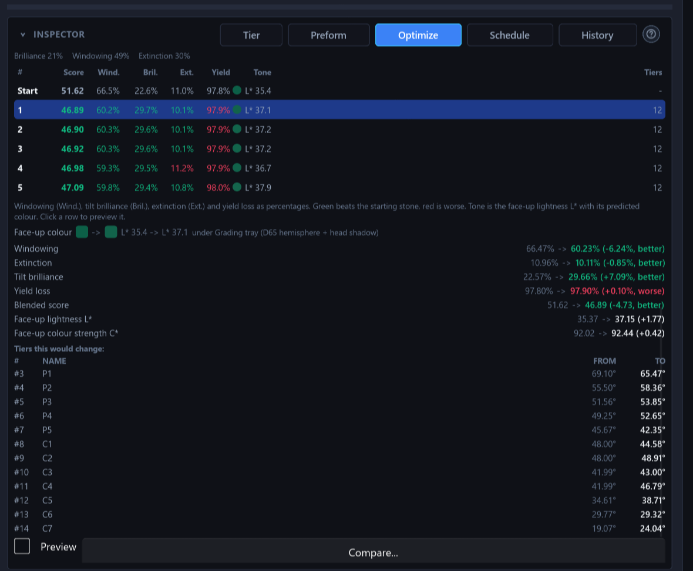
Angle sweeps
Edit → Angle Sweep... tries one tier's angle over a range and shows how the stone's figures change. You choose the tier, a From angle, a To angle and a Step; the fields take arithmetic. A sweep tries at most 200 angles, and the design's own angle is always one of them, marked Current. Every angle is tried on a private copy of the design, so a sweep never changes the design while it runs. The table lists brilliance, windowing, extinction, fire, scintillation and yield for each angle, scored table-up in the design's material under the viewport's lighting, with the best figure of each column in bold green. An angle that gives no stone still gets a row, marked Not valid, with the reason. A tick box adds the tilt averages, which costs about a second and a half per angle.
A chart draws one line per figure, each scaled to its own lowest and highest value, so lines compare by shape and not by height. Use this angle sets the tier's angle in one undo step, and Copy CSV and Save CSV... export the rows. A table, a culet, a girdle tier and a tier that follows a relation cannot be swept, and the figures leave out concave tools.
Snapshot and the compare window
Snapshot Design keeps the current design and its solved masts in memory for the session. Compare to Snapshot lists each tier as Same, Changed, Added or Removed. The compare window shows two stones side by side, or behind a split slider, in the solid view or path-traced, turned together. Retarget, Optimize, the snapshot comparison and a pair of variants all open it. Opened from the Optimize tab, its header has a Compare against list: Current design (the default) or Original (before retarget), offered once a Retarget has been applied, so an optimized, retargeted stone can be judged against the stone you started with.
Under the stones, a table gives brilliance, windowing, extinction, fire and scintillation for both sides, measured table-up, each side in its own material, under the lighting selected in the viewport when you opened the window. For each figure it shows the value before, the value after, the change and one word: better, worse or same. A change smaller than a threshold reads as about the same: 2 points for brilliance, windowing and extinction, 3 for scintillation, and for fire 5 % of the before value but at least half an index point. A few sentences put the result in words, from the most important change to the least (“The after design is brighter face-up (+4 %) and shows less windowing (-3 %).”), or say “No clear optical difference.” One button adds the average over four directions and 181 tilt angles for both stones, with a threshold of 1 point. Keep after applies the change exactly as the dialog's own Apply does.
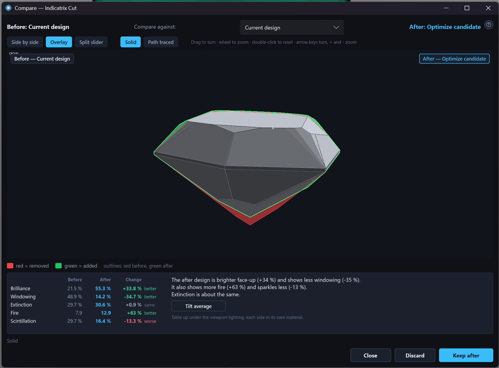
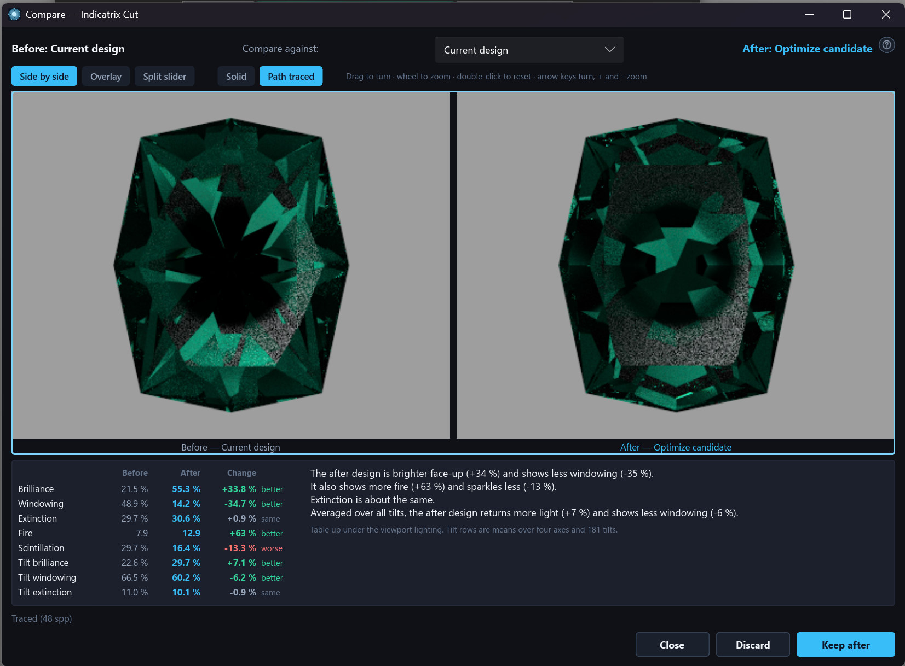
9History and variants beta
The inspector's History tab has two views. Steps lists every change made to the open design, newest first, each with a small picture of the design at that step. Variants lists named copies of the design that you chose to keep.
Steps
A click on a row goes to that step in one move, instead of pressing Undo many times. The design is put back as it was, and the tier table and the solid view update at once. The solved values stay out of date until the next solve, as after Undo. A jump is not an edit: it adds nothing to the history, and the steps you went past stay in the list marked “undone”, so you can go forward again. If you make a new change after going back, the steps after the one you stood at are dropped, which is the rule after Undo too.
A row shows what the step did, in the words of the Undo button's hover text, its number, and a mark on the current step. Several quick nudges of one angle count as one step. The pictures are drawn in the background, only for the rows in view, from one fixed angle in the flat-shaded solid view. A step whose design does not solve shows “Does not solve” instead of a picture, and the pictures leave out concave tools. The list is one Tab stop with Up, Down, Home, End and Enter. The history starts again at New, Open and Load, and it is not saved with the design file.
Variants
A variant is a named copy of the whole design: the cutting instructions, the rough, the girdle size, the material, the relations and the concave tiers. It does not keep the lighting, the undo history or attached files. You can save one from the Variants view (the design as it is now), from the small save button on a row of the Steps view (the design as it was at that step) or from the command palette. A variant has a name and an optional note.
Variants are kept in the library under the design's id and not in the design file, so a design file you send to someone does not carry them. A new design that has never been saved gets a new id each time it opens, so save it once before relying on its variants.
Open on a variant makes the open design that variant, as one undo step. One Undo restores the earlier design, including its rough, material, relations and concave tiers. Each row also has Rename, Note and Delete. A variant remembers the variant it came from (“from: Variant 2”), so a run of saves reads as a chain, and opening an earlier variant and saving again starts a second branch; this is remembered only while the design stays open. Compare two designs takes any two entries from the current design and the variants. It shows them as pictures in the compare window or, in the Advanced interface, as the cutting instructions line by line with added and removed lines marked.
Limits: variants stay on this computer, a variant cannot be edited in place (open it, change the design and save a new one), and the list has no search or filter.
10Cutting mode beta
Edit → Cutting Mode..., the Cut Mode button on the command bar, or the command palette opens the cutting instructions made for the bench: one step per page, in the order of the cutting sheet, in type large enough to read from the lap. The design must be open and solved. A step shows:
- its number (“Step 4 of 12”), the side of the stone and the tier's name;
- the angle, in very large figures;
- one chip for each index;
- what the facets meet, and the depth in millimetres with the mast reading when the step has one;
- a cheater offset, the tool values of a concave tier and your note, when there are any.
Beside the step are two pictures: the stone after this step, which is the solid view with the Cut slider set to the step and this tier's facets highlighted, and an index wheel with the step's indices marked as dots.
Left and Right (or Page Up and Page Down) move between steps and mark nothing. Space or D marks the step done and goes on, and Esc closes the screen. You can also tick single index chips, for a step with many indices that you cut over several sittings. The two kinds of mark follow each other: ticking the last chip marks the step done, and taking the done mark back clears its ticks. The progress bar counts the steps marked done. Cutting mode follows the order of the cutting sheet and does not check that you cut the steps in order.
The marks are kept in the library on your computer, under the design's id, and not in the design file. They are written as soon as you make them, and sending a design file never carries them. A mark stores a fingerprint of the step's cutting values: side, angle, indices, depth or mast, cheater offset and, for a concave tier, the tool values. If you change the step afterwards, the page shows a Changed since you marked it badge and the step stops counting as done until you cut it as it now reads and mark it again. Renaming a tier or editing its note does not change the fingerprint. Reset progress removes every mark of the open design, after a question.
11Rough planner beta
Library → Plan Rough... answers a question the preform's single-design yield figure cannot: given a piece of rough and the designs in the library, what is the heaviest set of stones that can be cut out of it? The planner opens in its own window, not a modal dialog, so you can keep browsing the library, click designs and move it to a second screen; closing it only hides it, and the model and results are there when you open it again. A plan that is running keeps running.
You model the rough on the left: a block (X, Y and Z in millimetres), a cylinder (diameter, length and axis), a water-worn pebble (the ellipsoid inscribed in a box) or a mesh imported from an OBJ, STL or PLY file, and then take flat cuts off it — an edge cut or a corner cut on a block, or a face cut in any direction on any shape. Cuts can be typed in as setbacks and angles, or made by clicking an edge, a corner or a face in the 3D view, with undo and redo for every step. The readout shows the model's volume and its weight in the chosen material (only materials with a known specific gravity are offered, because the specific gravity turns volume into carats), and if you type the weight you measured on a scale it checks the model against it and tells you when the two disagree; Fit to weight scales the whole model to the weight you typed. The Stones (up to) limit runs from 1 to 99 (a maximum, not a target: a layout may cut fewer). The planner returns up to 10 layouts, heaviest first.
A non-convex rough from a mesh file. A scanned or irregular rough can be imported as OBJ, STL (ASCII or binary) or PLY (ASCII or binary). Choose the file's unit (mm, cm, m, inch or micrometres) before importing; if the size looks wrong, the planner suggests a unit but never applies it. The file is read in the background, and a file larger than 64 MiB is refused before any of it is read. If the mesh is closed, the planner uses the mesh itself and not only its convex outline: no planned stone reaches into air at a notch or a hollow, and the volume, the weight check, Fit to weight, the yield and every fill percentage use the volume of the material. A hollow rough, written as an outer surface plus one more closed surface for each cavity, has the cavity volumes taken out whichever way they are wound. If the file cannot be used as a closed mesh (no faces, an open or non-manifold surface, no volume, or more than 200,000 triangles), the import falls back to the convex hull of its vertices and says why; a smooth scan, whose outline is too fine to stand in for it, is refused instead and has to be decimated first. Small scan defects are repaired first: hair-wide gaps are joined, faces turned the wrong way are turned back, and holes up to 5 % of the bounding-box diagonal (at most 64 edges) are filled; the status line says what was done. A mesh that crosses itself is detected and falls back to its convex outline with a note naming the place. A smooth scan is planned from the scan itself: a simplified outline of at most 64 planes only sizes the grid, every stone is checked against the scan, and the plan uses every processor core. A scan is planned on a coarser grid than a modelled rough and stops at the Scan plan time limit (120 s by default, 0 for none); a stopped plan shows the best layouts found so far, marked as a partial search. Saved plans keep the mesh, and older plans still open.
Inclusions. A rough imported from a mesh file can take inclusions: pick a closed mesh of the crack, feather or crystal (OBJ, STL or PLY, in the same coordinates and unit as the rough), or locate one from photos taken on a fixed camera rig (a beam-splitter cube of known size calibrates the rig). Stones keep clear of an inclusion with a margin of 0.3 mm by default, while the weight, Fit to weight and the yield count it as material, because it is stone you hold. An inclusion that reaches the surface is refused (model it as a notch instead). Inclusions on a block, cylinder or pebble, and keep-out shapes without a mesh, are not available yet.

The candidate designs are either the designs the library's search and filters currently show, or the whole library. A single design can be excluded from planning — a plain cube that keeps winning, say — from a button on its result row or from the library's context menu; it stays in the library and is only left out of the candidates. The loss settings default to 0.30 mm saw kerf, 0.20 mm allowance per side of each stone, 0 mm rough skin and a 1.00 mm minimum stone width, and can be edited in the window. A design's finished size (footprint, height, volume and convex outline) is measured once by solving its facets, then stored in the library database, so only the first run over a large library is slow; the measurement is repeated automatically when a design's geometry changes. Designs without a usable design file — catalogue entries known only by an angle table, or schedules that rely on the preform to close the stone — are skipped and counted in the results. A design's concave tiers (section 7) are honoured in the volume, the carat weight and the yield, and the 3D view draws the tool cuts. The fit uses the carved outline: a tool that removes a vertex of the outline lets the stone sit tighter, while grooves and dimples inside the outline change nothing. A design whose concave tiers cannot be resolved is skipped and counted; it is never planned as a flat stone.
Two kinds of layout are ranked together. A single stone is fitted exactly: the planner uses the design's real outline, turns it freely in every direction and scales it to a very good fit inside the rough, so the table can end up tilted against every rough face. Several stones use the box model: the rough is sawn edge to edge in three stages (slabs, then bars, then pieces, with the kerf lost at every cut; the planner tries all 6 orders of the three axes), and each piece holds one stone treated as the smallest box around it, so a round stone is treated as needing a square footprint. Stones of different designs can be mixed. The cut plan of a sawn layout is written as sawing instructions, and each piece names the design cut from it, which rough face its table faces, and the finished size and weight; an exact single stone is not sawn and has no saw stages.
Every result is also shown in a 3D view: the stones are drawn as their real designs, each design in its own colour, inside the rough and the saw pieces, and hovering a stone tells you its design, weight and place in the plan. Each design in a result carries its own metrics: its share of the layout's weight, its finished size and proportions, its volume, how the table is oriented in the rough, how much of its piece it fills, and its brilliance, extinction and windowing from the tilt curves already stored for the design.

A design's name in a result is a link into the library; a button on each result narrows the library list to the designs of that result, and another to the designs of all of them. Results can be saved in the library database, exported to a plain-text plan file and imported again, for example on another machine. When a saved plan is opened, every design is checked against the library, and the plan says which designs were deleted, changed since, or found again by title.
The results are an estimate after your kerf and allowance; real yield also depends on inclusions you have not modelled and on how closely you follow the plan. The planner keeps stones out of the inclusions you add to a mesh rough, but knows nothing of the others, and assumes stones that come out exactly to their design's proportions; a cylinder and a pebble are approximated by polyhedra slightly inside the true shape, and around the notches of a mesh it checks stones rather than optimising them. It works with the local library only; if a remote catalogue is selected, the window asks you to switch back. Use the ranking to compare options, and do the final marking-up on the rough itself.
Sources: crates/indicatrix-cut-core/src/rough_plan/,
apps/indicatrix-cut/src/gui/rough_plan/, and the manual chapter
apps/indicatrix-cut/docs/manual/15-planning-a-rough.md.
Importing a scanned or irregular rough as an OBJ, STL or PLY mesh works,
and stones keep clear of the inclusions you add to it.
12Solid inspection view

The Edit tab's second viewport shows the exact polyhedral solid (facet edges and vertices, not a tessellated approximation), flat-shaded, and it updates after almost every edit, not only after Solve. Four buttons choose what it shows: Solid, Path-traced (the Live Render picture), Both (the path-traced picture with the solid's facet edges on top) and Diagram (a flat faceting diagram with crown, pavilion and profile panels, ringed by the index wheel). Hover over a facet to read its tier, angle, index position, block and margin over the critical angle. Click a facet to select its whole tier in the tier list; click a row and its facets tint in the viewport. When an edit has not solved yet, the viewport keeps the last solved solid on screen under a banner. When a design does not solve at all, the last solid that closed is shown dimmed and the banner names the problem.
The Cut slider
The slider in the viewport toolbar shows the stone being cut. All the way left is the Rough. Each step to the right adds one tier, and the label names it (After P1 (3 of 9)). All the way right is Finished, where it starts whenever you open or create a design. Every position is a whole, closed stone that you can orbit and pick, and the facets of tiers not yet cut are not on it. Without concave tiers, the steps follow the order of the cutting instructions. With concave tiers, they follow the order in which the stone is cut: the pavilion and girdle facets, the concave pavilion tiers, the crown facets (the table excepted), the concave crown tiers and last the table.
The slider's border turns amber while the stone is cut back. The Live Render picture and the Optimize and Retarget previews follow the slider, and Live Render shows a badge with a Show finished button. The Diagram always shows the finished design. Exports, the tilt video, the tilt curves and the hover pictures always draw the finished gem (section 13).
Handles and Slice
A selected, solved tier shows three handles on its facet. A tilts the tier, D moves it along its normal, which pins its mast (the toast says what it met before), and I turns it around the index wheel by whole teeth. Each handle moves the whole tier, every facet of its symmetric orbit, and the tiers that meet it by name follow. An angle snaps to 0.1° and a mast to 0.01. Shift gives fine steps and the Snap pill turns the snapping off. One drag is one undo step, and Esc during a drag puts the design back. The Diagram view has the same handles on its flat panels. A tier whose angle follows a relation has no angle handle. The Larger handles preference (section 16) makes the handles about 60 % bigger for touch screens and pens.
Slice starts a new tier by drawing on the stone. Drag a line across the solid view and the part to the right of your drag direction is removed; Flip reverses it. The plane is snapped to the nearest index and an angle rounded to 0.1°, and the provisional tier appears with a green outline. Drag its depth handle inward to cut it in, choose Symmetric for the whole orbit or a single index, then Keep to add the tier as one undo step or Discard. Slice needs the 3D stone and is not available in the Diagram view.
13Export

A split button in the command bar groups the master-still render export with two further File-menu exports built from the same solved schedule: Export Cutting Sheet (HTML), a self-contained printable page with an embedded crown/pavilion/profile diagram and one row per tier (sequence, name, angle, indices, solved mast, meet instruction, and any cheater/azimuth offset), and Export Diagram (PNG), the same facet drawing alone at print quality. Where a real girdle diameter is set, the cutting sheet also prints each facet's cutting depth in millimetres and its unsigned angle of elevation for a machine's dial, alongside the dimensionless mast.
A concave tier prints on the cutting sheet as its two lines in one band
(section 7). The cutting sheet and the diagram export
refuse a design that does not solve (“Cannot build a cutting sheet:
...”). An image export always draws the finished gem,
whatever the Cut slider shows. When the slider has the design cut back, the
export first rebuilds the whole stone on the background solver, and when the
design does not solve it exports nothing and says “Nothing was
exported: the design does not solve” with the solver's reason
(apps/indicatrix-cut/src/gui/editor/finished_stone.rs).

- Max resolution
- 8192 × 8192 px (
MAX_EXPORT_DIM) - Max samples
- 32 768 per pixel (
MAX_EXPORT_SPP) - Max bounces
- 128 (
MAX_EXPORT_BOUNCES) - Colour spaces
- sRGB, Display P3, Rec. 2020 (Display P3/Rec. 2020 exports embed an ICC profile so they aren't misread as sRGB)
- File formats
- Read and write: GemCAD
.asc, the native.indicatrixdesign file, 8-bit PNG renders. Read and import:.gemand.gcs. Write, experimental:.gcs. Details below.
Constants from apps/indicatrix-cut/src/bridge/export_thread/params.rs.
The master still is an 8-bit PNG. The export dialog can also render the stone under several saved views in one export (Also Render With These Presets), and an export can be added to the render queue instead of starting at once.
The cutting sheet
The sheet follows the layout of a printed fantasy-cut page. From top to bottom, a block with nothing to print is left out rather than filled with a guess:
- Header. The title (or “Cutting instructions”),
an optional subtitle, “by” and the designer, and the month and
year of the export. The title comes from the file details stored in the
.indicatrixfile, falling back to the.ascheader lines. - Facet Data. Tiers and facets in the pavilion, girdle and crown, and the totals. A tier without an index list is one facet, otherwise one per index; a concave tier counts one per place the tool is used; the culet counts as a pavilion facet, and a crown with a table reads “32+1”.
- Size Data. L/W, H/W, V/W³, P/W, C/W and P/C to three decimals, the same figures as the status bar and the yield report. A dash means the design does not measure.
- Design Data. The refractive index with its material (a question mark means the material is a guess from the index), or the RI range and size range when the design gives one; then the symmetry (“8-fold, mirror”), the gear (“96 index”) and the shape, and the girdle diameter and carat estimate once a girdle diameter is set.
- Views. Four drawings in two rows, labelled by viewing direction: down +Z (the crown from above), down −Z (the pavilion from below), down +X (the profile) and down −Y (the end).
- Comments. The design's notes and its
.ascfootnotes. - Pavilion and Crown tables. Step number, code, angle, indices and instruction, then the mast, the mast in millimetres and the cheater offset when the sheet carries them. Step numbers run on from the Pavilion table into the Crown table, so they are the order you cut in.
The order and the labels are the same everywhere in the app (the sheet,
Cutting mode, the Cut slider and a Build this design lesson). Pavilion and
girdle tiers come first, then the crown, and the table is always last; a
concave tier is cut after the flat tiers of its side. A tier that meets a
facet cut later moves to just after the last facet it meets. Codes are
numbered separately for each letter in cutting order (P1, P2, … G1,
… C1, … T and Culet), angles are printed unsigned, and
positions are written with dashes and two digits (96-08-16-24,
03.50 for a position between two teeth). The plain-text version
has the same blocks without the four drawings. The sheet always re-solves the
design fresh, because the masts it prints are what you set a mast gauge to.
Export Diagram (PNG) is one wide picture of the crown,
pavilion and profile panels, about 1800 × 720 pixels.
Design file formats
- GemCAD
.asc: read and written, with CRLF line ends as GemCAD writes them. A relation is exported as its current angle and a concave tier as two footnotes in cutting order. - Native
.indicatrix(crates/indicatrix-formats/src/native): a self-contained text file in TOML syntax with a versioned header, which still opens the older.indicatrix.tomlsidecar. It keeps constraints, preforms, tier relations, concave tiers and a snapshot of a custom material, which a plain.asccannot hold. A file is written as version 2 only when it has concave tiers and as version 3 only when a tier has a relation, so every other file is unchanged and an older build refuses a version 3 file rather than dropping the relations. It also carries descriptive metadata (title, designer, source, notes, tags, licence, dates, an id) and attachments that cannot be recomputed (a PDF, the original.gemor.asc, a diagram image); derived values such as ratios, volume, facet counts, the angle table, previews and tilt curves are recomputed on import. Variants, cutting marks and per-design lighting are not in the file (section 2). - Gem Cut Studio
.gcs: opens and imports, converted to.asccutting instructions. The reader follows the file description in that program's 1.1 manual (pp. 58–61) and reads all 59 real files of its test corpus. Gem Cut Studio rescales its designs to fill its workspace, so the converted masts are about 0.9 of what GemCAD writes for the same design; the shape is identical. Anything the reader does not recognise is listed in the import summary. The writer is experimental: it follows the published description, has not been checked in Gem Cut Studio itself, and chiral designs are untested. - GemCAD
.gem: opens and imports, converted to.asccutting instructions. GemCAD's binary save format has no published specification; the geometry (every facet plane, tier, name and cutting note, plus gear, symmetry and refractive index) is decoded from the binary and verified against a corpus of 254 files. A CAM preform in the file is read but not converted, and the import summary says so.
Neither reader is affiliated with or endorsed by those tools' authors. The file-format table sets the formats side by side.
14Render jobs
Collect still pictures and tilt videos as render jobs, then let the program render them one after another while you keep working, or overnight. Add to Queue sits next to Start Export in the export dialog and next to Start Video Export in the tilt dialog; it saves a job and renders nothing yet, and the two buttons do not replace each other.
What a job keeps
A job keeps a frozen copy of everything it needs: the finished stone, the material and its colour, the lighting, the camera, the size, the samples and the other export settings, so changing the design afterwards does not change what it renders. It does not freeze the remote worker: the address and certificates are read from Settings when the job runs, and a job whose remote is gone renders on this computer with a note. It does remember where to render (local only, local and remote, or remote only) and the transfer. With presets ticked under Also Render With These Presets, each picture is its own job. The file name is fixed when you add the job, and “ (2)” is added if the name is taken by then; a date or time in the template is the time of Add to Queue.
The Render Jobs window
Open it from File → Render Jobs... or from the Jobs button at the top of the main window, which appears while a job waits or runs (“Jobs: 3 waiting”, or “Rendering 2 of 5 · 42%” with a progress bar). A row shows the number, name, state (Queued, Running, Paused, Done, Failed, Cancelled), what it renders and its progress. The list is kept in the library, so it survives a restart, and closing the window does not stop a render.
Start Queue renders the waiting jobs from the top down, one job at a time, and turns into Pause Queue. The queue never starts by itself, not even when the program starts, and it stops when the last waiting job is done. A row offers only the buttons that make sense for its state: Run Next (moves it to the top without interrupting the running job), Up and Down, Pause, Resume, Restart, Cancel, Show (opens the folder) and Delete. Clear Finished removes Done and Cancelled jobs. Delete and Clear Finished never delete pictures, videos or frames, only the list entry.
Pausing works frame by frame
A paused still starts again from the beginning when resumed. A paused tilt video keeps every finished frame and resumes at its first unfinished frame in the same folder; the video file is made once all frames exist, and the frames stay on disk (at large sizes, many gigabytes) until the job is finished or you delete the folder. Restart throws the frames away and starts at frame one. If you close the program while a job renders, it asks first and the job waits as Paused; after a crash or power cut the job is found as Paused with a note, and at most one frame is rendered twice. Only one job renders at a time, though a picture exported directly from the dialog can render alongside it, with both slower. An HDR map must stay where it was and unchanged until its job has rendered.
Exporting a script
Export Script... writes the unfinished jobs, in queue order,
to a new folder named render-jobs- with the date and time, so
nothing is overwritten. You choose PowerShell (.ps1), shell
(.sh) or both, whether to render on this computer or on this
computer and the remote worker, and whether the finished files go into the
script folder. The folder holds run-render-jobs.ps1 and
run-render-jobs.sh, a jobs/ folder with one job file
per job (and assets/ with any HDR maps) and, if chosen,
renders/. Copy it to the computer that should render and run
powershell -ExecutionPolicy Bypass -File run-render-jobs.ps1 or
sh run-render-jobs.sh. The script calls
indicatrix-cli once per job (set INDICATRIX_CLI to
its full path if it is not on the PATH), the engines, remote address and
certificate folder can be changed at the top of the script, and a tilt video
that stopped part way continues where it stopped.
Running a job file by hand
A job is a *.job.json file. indicatrix-cli render
FILE.job.json renders a still and indicatrix-cli tilt-video
FILE.job.json renders a tilt video; a file of the other kind is
refused. Both use the program's own render engine, so the picture is the one
the program would have made.
| Option | Meaning |
|---|---|
--local cpu|gpu|cpu+gpu | Engines of this computer; the default is cpu+gpu. Without GPU support in the build everything renders on the processor and a note says so. |
--remote HOST:PORT with --cert-dir FOLDER | Also use a remote worker; the two go together. |
--compute local|remote|both | Replace the job's own choice; remote and both need --remote. |
--transfer full|final, --contribute-local | Replace the transfer choice; with final, this computer renders a share too. |
--out FILE.png / --out-dir FOLDER | render only: another picture path. tilt-video only: another frame folder. |
--restart, --quiet | tilt-video only: start again from the first frame (a video resumes by default). No progress lines; notes and errors still print. |
Standard output is one line, the path of the finished file (for a video the MP4
or GIF, or the frame folder when no video could be made); progress, notes and
wrote PATH go to standard error. Exit codes: 0 done, 1 wrong
command line or the other kind of job file, 2 a job file that cannot be used
(not a job file, a newer version, an invalid value, an HDR map that is missing
or changed, a frame folder that belongs to another job), 3 a file could not be
read or written, 5 the render failed or was stopped.
A render done only on the CPU, or only on the GPU of one computer, gives the same picture every time. One that splits its work between the CPU and the GPU, or uses a remote worker, is the same only statistically: the samples are shared by measured speed, so the noise differs a little between runs, and both pictures are equally correct.
15Tutorials and guided lessons
Help → Tutorials... opens the tutorial browser.
Tutorials are grouped in sections (Getting started, Tiers, Solving,
Optimizing, Viewing, Output, Library and Preferences), there is a search
box, every finished tutorial gets a Done mark, and a Reset progress button
clears the marks. There are 68 short tutorials, each teaching one tool, from
adding a tier to angle sweeps, variants, concave tools, cutting mode and the
Rough planner (crates/indicatrix-editor/src/guide/tutorials).
Two longer lessons sit beside them: the worked example, in which you build a
round-brilliant-style stone yourself, tier by tier, and an eight-step
welcome tour. A first-run dialog offers the tour, a start from a template,
or nothing.
A small guide panel walks through the lesson. Each step lists numbered actions with the exact values to type, outlines the control it is about and says what to look for. A step is judged from the state of the design and not from the buttons you pressed, so any route to the goal counts: the tier form, an inline edit, Undo and Redo, or auto-solve finishing first. A step whose result leaves no trace in the design, such as a file exported or the Cut slider moved, is judged from the action itself. Controls the step does not need are dimmed, and their keyboard shortcuts do nothing, until the tutorial is closed. Back returns to the previous step, Skip step moves on, and the cross closes the tutorial. Which tutorials you finished is kept in the program's settings and not in a design.
Build this design
Any design in the library, local or remote, can become a tutorial that shows how to cut it from scratch. Use the steps button in the design header, Build this design on the card's menu, Library → Selected Design or the command palette. The program reads the design, solves it to learn every depth, writes the lesson and starts it. The library design itself is not opened and is never changed; you build in a new design. The lesson has these steps:
- Start a new design with the original's gear, symmetry order and mirror setting and a preform shaped like its rough.
- One step for each tier, in cutting order, listing what to type into the tier form: angle, Meets, name and indices.
- A step of its own for the concave tiers, placed where the cutting sheet puts them.
- Solve and check; the step finishes when the result is a closed solid.
- Compare with the original. The lesson holds the original as the snapshot, and the step finishes when every tier is cut as in the original and every solved depth is within one percent of the original's.
The first tier of each block (girdle, pavilion, crown) states its depth with an exact scale value, because the solver needs one such tier in every block. For the other tiers, the program tries the lesson before it shows it: it types every tier through the tier form, solves the result, and uses named facets or an unspecified vertex only for a tier that lands within 0.4 percent of its original depth. Every other tier states an exact scale value, and the step says so. A design of more than 40 flat tiers is grouped into steps of up to six tiers. No lesson is made for a design with no tiers, one that has only an angle table, or one that does not solve. A finished lesson's Done mark is saved under the library design's id.
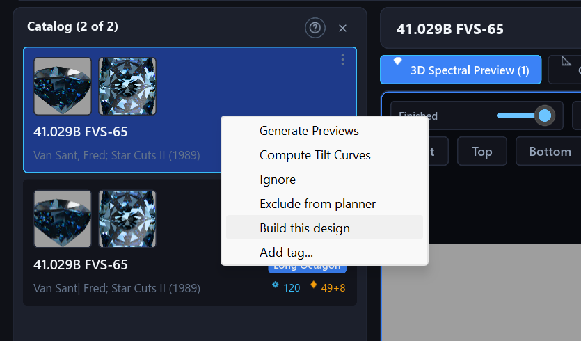
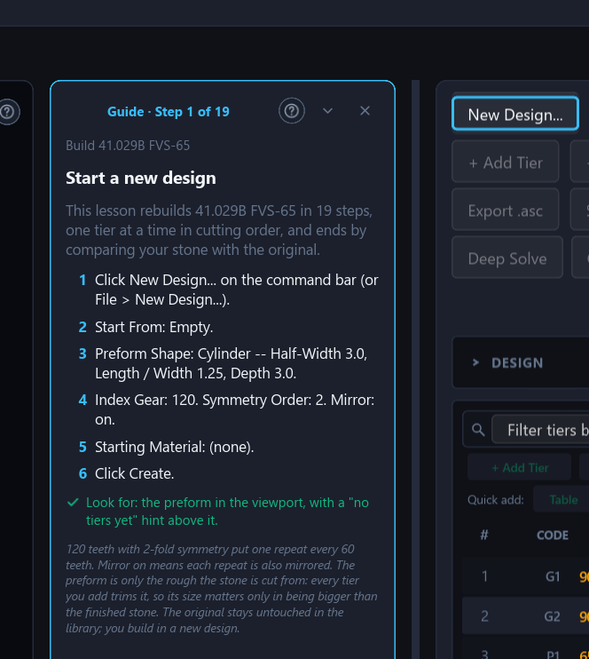
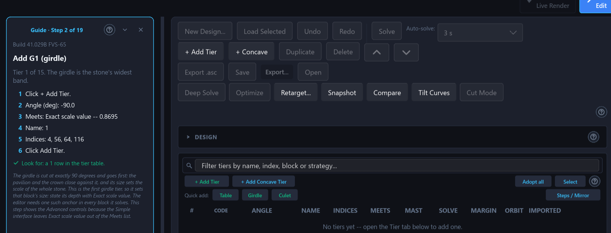
16Interface: Simple and Advanced, preferences, help
Simple and Advanced
One switch, the Simple | Advanced pill at the top left of
the window (also in Edit → Preferences...), sets how many controls the
whole program shows. Simple shows what most designs need and Advanced shows
every control. The switch only hides or shows controls: designs, settings
and files are never affected, and a hidden control keeps its value and still
applies. Where a hidden setting is not at its default, the panel says
“Some advanced settings are in use. Switch to Advanced to see
them.” A new installation starts in Simple; an installation used
before the switch existed stays in Advanced. Simple hides, for example, the
tier table's mast, solve, orbit and imported columns, the Schedule tab, Deep
Solve, Snapshot and Compare on the command bar, the Edit as Text and Angle
Sweep commands, and the advanced render settings. Chapter 17 of the user
manual
(apps/indicatrix-cut/docs/manual/17-preferences-and-accessibility.md)
lists them all.
Preferences
Edit → Preferences... (Ctrl+,) has four sections: Interface, Appearance, Direct manipulation and Tutorials. Interface scale offers Automatic and eight fixed scales from 75 % to 200 %, and applies at the next start. High contrast switches to near-black backgrounds, white text, visible borders and bright accents. It applies at once and covers the main window and the Compare and Rough Planner windows; the colours that carry meaning (the curve colours of the tilt graph, for example) and the rendered pictures keep their own colours. Larger handles makes the angle, depth and index handles about 60 % bigger. Snap to gear steps is the setting of the Snap button, and the app also remembers the Slice tool's Symmetric button. The Slice tool itself starts off in every session. Every choice is saved automatically.
Keyboard and screen readers
Every button, switch, list and field of the dialogs and windows can be reached with Tab and Shift+Tab, pressed with Space or Enter, and shows a bright ring while it has the keyboard. Lists are one Tab stop with Up and Down inside. Icon buttons are at least 20 pixels square, and a screen reader hears each button's name, whether a switch is on and which list row is selected. Hover any control for a one-sentence tooltip that says what it does and, when it is greyed out, why.
Help
Help → User Manual opens the manual in a window of its own, built into the program, with a chapter list, a search box that looks through every chapter, and Back and Forward buttons. Many panels carry a small ? button that opens the manual at the section about that panel, and F1 opens the page for whatever is on screen. Help → Glossary lists every term of the manual's glossary with a search box.
Command palette
Ctrl+K or Ctrl+Shift+P (also Edit →
Command Palette...) opens one small window that lists the program's actions,
nearly 80 of them in seven categories: File, Edit, View, Tiers, Solve, Tools
and Help. Type a few letters of a name. The letters only have to appear in
order, so dsolve finds Deep Solve. The start of a word counts
for more, every word you type must match, and a match in the title beats a
match in the hidden search words. Before you type, the commands you ran
lately come first, up to eight; the list is not saved between sessions. A
command that cannot run now is shown dimmed with its reason (for example
“Open or create a design first”), and the palette follows the
same rules as the matching button, including a tutorial's locks. It lists
actions, not data: it does not search designs, tiers or files.
17Install, build and the command line
The browser version needs no installation (see the web app page). For the design library, GPU and remote rendering, download the desktop application from the downloads section of the overview, or install or build it with Cargo as below. Then start with the user manual. Windows, Linux and macOS are tested.
Install with Cargo
The workspace uses Rust edition 2024 and needs rust-version = "1.95"
or newer (workspace Cargo.toml), so install Rust with rustup and
run rustup update stable. On Linux and macOS the installer is
curl --proto '=https' --tlsv1.2 -sSf https://sh.rustup.rs | sh; on
Windows use winget install --id Rustlang.Rustup or
rustup-init.exe from rustup.rs, whose installer also offers to set
up the MSVC C++ build tools.
# CPU-only build
cargo install indicatrix-cut
# with the GPU path-tracing backend
cargo install indicatrix-cut --features gpu
# then start it (HDR environment-map loading is always included)
indicatrix-cut
# optional: the coordinator / remote render worker
cargo install indicatrix-worker --features workergit clone https://github.com/suitable-name/indicatrix.git
cd indicatrix
cargo run -p indicatrix-cut --release
# with the GPU compute kernel
cargo run -p indicatrix-cut --release --features gpu
The repository's own build scripts (scripts/pgo-build.ps1,
scripts/pgo-bolt-build.sh) make the Windows and Linux builds; on
macOS, install with Cargo. Every crate's crates.io and docs.rs pages are
listed in the workspace table, and the
renderer library's API reference is
docs.rs/indicatrix. The remote worker
quick start and the headless indicatrix-worker render command are
on the distributed rendering page.
The desktop app writes a log file (indicatrix-cut.log, next to the
executable, falling back to the temp directory) for diagnosing a
background-thread failure. Verbosity follows RUST_LOG, defaulting
to warn everywhere and info for
indicatrix and indicatrix_cut
(apps/indicatrix-cut/src/main.rs). The library is a local
database file, facet_diagrams.sqlite, opened relative to the folder
the program is started from: starting it from another folder opens (or creates)
a different, empty-looking library. Settings are saved automatically to
settings.toml (in %APPDATA%\indicatrix-cut on Windows,
~/Library/Application Support/indicatrix-cut on macOS, and
$XDG_CONFIG_HOME/indicatrix-cut or ~/.config/indicatrix-cut
on Linux); a damaged file is renamed aside and the defaults are used.
The command-line tool
indicatrix-cli runs the same solver, optimizer, retarget gate and
sweep as the editor without a window or a GPU, so a number printed there is
the number the editor shows. A design is a .indicatrix,
.asc, .gem or .gcs file, read from its
extension.
| Command | What it does |
|---|---|
info | Name, gear, symmetry, preform, material and the tier list, with each tier's standard code. Does not solve. |
solve | Solves every tier, checks that the facets enclose a stone and lists the manufacturability warnings; --out saves a .indicatrix, which also converts an .asc, .gem or .gcs. |
metrics | Table-up windowing, brilliance, extinction, fire and scintillation, the proportions and the yield; --tilt adds the tilt averages. |
validate | The warnings and the Good, Check or Problem verdict of the status strip. |
optimize | The Optimize tab's search, with ranked candidates; --budget (default 800), --starts (1 to 32, default 8), --seed, --preset; --out saves the best. |
retarget | The Retarget dialog's engine and validity gate for another material (--mode shift|optimize, --crown-fraction, --crown-ratio, --no-keep-look). |
sweep | Sets one tier to every angle of a range and scores each one (--csv). |
export | Writes .asc, .indicatrix, .gcs or the cutting sheet as .html. |
render, tilt-video | Render a job file made by the render queue (section 14). |
# from a clone of the repository (an installed binary is just: indicatrix-cli info round.asc)
cargo run -p indicatrix-cli --release -- info round.asc
cargo run -p indicatrix-cli --release -- solve round.asc --out round.indicatrix
cargo run -p indicatrix-cli --release -- metrics round.indicatrix --material Sapphire --json
cargo run -p indicatrix-cli --release -- validate round.asc --json
cargo run -p indicatrix-cli --release -- optimize round.indicatrix --preset brilliance --budget 400 --starts 4 --seed 7 --out better.indicatrix
cargo run -p indicatrix-cli --release -- retarget round.indicatrix --material Sapphire --crown-fraction 0.33 --out sapphire.indicatrix
cargo run -p indicatrix-cli --release -- sweep round.indicatrix --tier "Pavilion Main" --from 39 --to 43 --step 0.5 --csv sweep.csv
cargo run -p indicatrix-cli --release -- export round.indicatrix --format html --out sheet.html
# every command has its own help page
cargo run -p indicatrix-cli --release -- retarget --help
Angles are positive numbers, as the tier table shows them: the tier says which
side of the girdle it is on, and a sign in front is ignored. Text reports and
CSV print every angle unsigned, whereas --json keeps the signed
convention of the design files, in which a pavilion angle is negative. A tier is
named by its name (P1, G1/G2) or by #N,
the Nth row of the tier list. --material NAME is a built-in or a
custom material (from --db FILE, a design library that is opened
read-only, or carried by the design file), --ri N a bare flat
refractive index, and --lighting NAME chooses the light the score
is taken under (the Grading tray by default).
Exit code 0 means done, 1 a wrong command line, 2 a design that cannot be used
or a result that was refused (nothing is written), 3 a file that could not be
read or written, 4 a validate verdict of Problem and 5 a failed or
stopped render. A file named by --out is written only when the
command succeeds. Text, JSON and CSV output are deterministic: the same command
on the same files prints the same bytes, and the result of optimize
does not depend on the number of processor cores. retarget accepts
only a Valid result, since a command line has nobody to look at the stone.
.gcs export is experimental, as in the editor.
The tool lives in apps/indicatrix-cli.